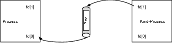
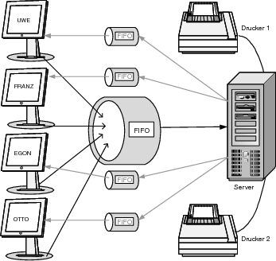

|
|
|
 9.3.2 Pipes einrichten – pipe()
|
||||||||||||||||||||||||||||||||||||||||||||||||||||||||||||||||||||||||||||||||||||||||||||||||||||||||||||||||||||||||||||||||||||||||||||||||||||||||||||||||||||||||||||||||||||||||||||||||||||||||||||||||||||||||||||||||||||||||||||||||||||||||||||||||||||||||||||||||||||||||||||||||||||||||
| fd[0] ist der Filedeskriptor zum Lesen. |
| fd[1] ist der Filedeskriptor zum Schreiben in die Pipe. |
Bei Erfolg liefert diese Funktion 0, ansonsten bei einem Fehler -1 zurück – wobei errno auf einen entsprechenden Fehlercode gesetzt wird.
|
Abbildung 9.5 Erzeugen einer Pipe |
|
Hinweis Wer es wieder genau wissen will, nach dem Systemaufruf pipe() werden zwei Einträge der globalen Dateitabelle belegt, deren Indexwerte an fd[0] und fd[1] zurückgegeben werden. Beide Einträge in dieser globalen Dateitabelle zeigen aber auf denselben Inode, dessen Referenzzähler hiermit um zwei hochgezählt wird. |
Diese Pipe eignet sich allerdings höchstens für Selbstgespräche, da ja noch kein weiterer Prozess existiert, mit dem kommuniziert werden soll. Gewöhnlich wird nach dem Erstellen einer Pipe ein Kindprozess mittels fork() erzeugt. Da der Kindprozess die Pipe des Elternprozesses vererbt bekommt, sieht der Kommunikationsweg schon ein wenig nützlicher aus.
|
Abbildung 9.6 Ein weiterer Prozess mit fork() wird erzeugt. |
Jetzt müssen Sie den beiden Prozessen noch klar machen, wer was machen soll. Dies geschieht, indem Sie mit den Filedeskriptoren der Pipe durch Öffnen bzw. Schließen der Kanäle bestimmen, welcher Prozess in die Pipe schreiben und welcher aus dieser lesen soll. Dafür haben Sie bei zwei Prozessen mit jeweils zwei Filedeskriptoren (fd[0] und fd[1]) logischerweise auch zwei Möglichkeiten:
| Elternprozess liest, Kindprozess schreibt – Elternprozess schließt die Schreibseite (fd[1]) der Pipe und Kindprozess schließt die Leseseite (fd[0]). |
|
 Abbildung 9.7 Daten fließen vom Kindprozess zum Elternprozess. |
| Elternprozess schreibt, Kindprozess liest – Elternprozess schließt die Leseseite (fd[0]) der Pipe, und Kindprozess schließt die Schreibseite (fd[1]). |
|
Abbildung 9.8 Daten fließen vom Elternprozess zum Kindprozess. |
|
Hinweis Das Schließen der »überflüssigen« Filedeskriptoren wäre hier zwar nicht zwingend notwendig gewesen, nur liefert ein read() mit einer unvollständigen Anzahl zu lesender Bytes bzw. bei einer leeren Pipe nur dann EOF zurück, wenn alle schreibenden Filedeskriptoren geschlossen wurden. |
| Schreibt einer der Prozesse in eine Pipe, die zum Lesen bestimmt war, wird das Signal SIGPIPE ausgelöst. Sofern Sie dieses Signal nicht abfangen, wird das Programm aufgrund der Standardaktion dieses Signals beendet. |
| Wenn alle Daten aus der Leseseite einer Pipe ausgelesen wurden, liefert read() EOF zurück. |
| Die maximale Anzahl der Daten, die in eine Pipe geschickt werden können, sind mit der Konstante PIPE_BUF (in limits.h) definiert. |
| Wollen Sie die Dateiart einer Pipe mittels fstat() oder stat() mit der Strukturkomponenten st_mode aus stat() ermitteln, muss auf ein FIFO mit dem Makro S_ISFIFO überprüft werden. |
Hierzu soll ein einfaches Beispiel verwendet werden. Sie starten einen Prozess und geben als erstes Argument in der Kommandozeile eine Datei an, die gelesen werden soll. Anschließend erzeugen Sie eine Pipe und mittels fork() einen Kindprozess. Der Elternprozess schließt die Leseseite der Pipe, liest aus der Datei und schreibt anschließend diese Daten in die Schreibseite der Pipe. Der Kindprozess hingegen schließt die Schreibseite der Pipe und liest mittels read() aus der Leseseite der Pipe die Daten ein und gibt diese anschließend auf dem Bildschirm aus. Zugegeben, dies ist ein umständlicher Weg, Daten zu lesen und auszugeben, nur lässt sich damit recht einfach nachzuvollziehen, wie eine Pipe funktioniert. Hierzu das Beispiel:
/* pipe1. c */ #include <unistd. h.> #include <sys/wait.h> #include <stdio.h> #include <sys/types.h> #include <fcntl.h> #include <stdlib.h> #include <limits.h> int main (int argc, char **argv) { int fd[2], fd1, n; pid_t pid; char puffer[PIPE_BUF]; if (argc != 2) { printf("Usage: %s Datei\n", *argv); exit (EXIT_FAILURE); } if ((fd1 = open (argv[1], O_RDONLY)) < 0) { perror ("open"); exit (EXIT_FAILURE); } /*Wir erstellen eine Pipe*/ if (pipe (fd) < 0) { perror ("pipe"); exit (EXIT_FAILURE); } /*Wir erzeugen einen neuen Prozess*/ if ((pid = fork ()) < 0) { perror ("fork"); exit (EXIT_FAILURE); } else if (pid > 0) { /*Elternprozess */ close (fd[0]); /*Leseseite schließen */ /* Datei auslesen (PIPE_BUF Bytes) */ n = read (fd1, puffer, PIPE_BUF); /* In die Schreibseite der Pipe schreiben */ if ((write (fd[1], puffer, n)) != n) { perror ("write"); exit (EXIT_FAILURE); } /* Warten auf den Kindprozess */ if ((waitpid (pid, NULL, 0)) < 0) { perror ("waitpid"); exit (EXIT_FAILURE); } } else { /*Kindprozess */ close (fd[1]); /*Schreibseite schließen */ /* Leseseite der Pipe auslesen (PIPE_BUF Bytes) */ n = read (fd[0], puffer, PIPE_BUF); /* Daten auf Standardausgabe schreiben */ if ((write (STDOUT_FILENO, puffer, n)) != n) { perror ("write"); exit (EXIT_FAILURE); } } exit (EXIT_SUCCESS); }
Da sich die Systemaufrufe write(), read() oder close() bei Pipes anders als sonst üblich verhalten, folgt hierzu eine kurze Erläuterung.
| read() – read() wird so lange blockiert (vorausgesetzt es wurden nicht die Flags O_NONBLOCK und O_NDELAY verwendet), bis sich wieder genügend Daten in der Pipe befinden. Schreibt kein Prozess mehr in die Pipe, bleibt read() so lange stecken, bis der schreibende Prozess den Systemaufruf close() verwendet hat. Dieses Steckenbleiben von read() eignet sich prima zum Synchronisieren von Prozessen. Wurde O_NDELAY gesetzt und ist die Pipe fürs Schreiben geöffnet worden, aber momentan leer, liefert read() 0 (nicht EOF) zurück. Außerdem wird immer vom Ende des Puffers der Pipe gelesen (hierbei ist auch keine Verschiebung mit lseek() möglich). |
| write() – write() schreibt die Daten immer ans Ende des Pipe-Puffers. Ist die Pipe voll, wird der schreibende Prozess so lange blockiert, bis wieder genügend Platz zum Schreiben vorhanden ist. Dieses Verhalten könnten Sie abschalten, indem Sie das Flag O_NONBLOCK (und auch O_NDELAY) mit z. B. der Funktion fcntl() verhängen. In diesem Fall liefert der schreibende Prozess bei einem vollen Puffer 0 zurück. Aber gewöhnlich betreibt man eine Pipe blockierend. Ein Schreiben innerhalb der PIPE_BUF-Grenze ist außerdem immer atomar, sprich, kein anderer Prozess kann dieses schreiben noch unterbrechen, geschweige denn selbst in die Pipe schreiben. Versucht ein Prozess, in eine Pipe zu schreiben, die noch von keinem anderen Prozess zum Lesen geöffnet wurde, wird dem Prozess das Signal SIGPIPE (broken pipe) gesendet, was standardmäßig den Abbruch des schreibwütenden Prozesses bedeutet. |
|
Hinweis Diese Eigenschaften treffen natürlich sowohl für die namenlosen als auch für die benannten Pipes (FIFOs) zu. |
Natürlich ist es auch möglich, auf Pipes mit den Standard-E/A-Funktionen zuzugreifen. Dazu müssen Sie nur den mit dem pipe()-Aufruf erhaltenen Filedeskriptoren mithilfe der Funktion fdopen() einen Dateizeiger (FILE *) zuteilen. Natürlich müssen Sie fdopen() mit dem richtigen Modus verwenden. Denn es ist nicht möglich, Folgendes zu verwenden:
FILE *f; f = fdopen(fd[0], "w"); /* falsch */
Richtig ist dagegen:
FILE *rd, *wr; rd = fdopen(fd[0], "r"); wr = fdopen(fd[1], "w");
Beachten Sie, wenn Sie zwei Pipes erstellen, um mit einem Kindprozess Daten auszutauschen, sind »reading« und »writing« dort umgekehrt, d. h. parentRead = childWrite und parentWrite = childRead. Geben Sie Ihrem Dateizeiger einfach einen aussagekräftigen Namen, um Verwechslungen auszuschließen.
Das jetzt folgende Beispiel soll die Verwendung einer Pipe mit den Standard-E/A-Funktionen demonstrieren. Auch hierbei werden wieder (wie schon im Listing zuvor) eine Pipe und ein Kindprozess erzeugt. Eine Datei, die Sie als erstes Argument in der Kommandozeile angeben, wird ebenso versucht anzulegen. Im Elternprozess schließen Sie die Leseseite und weisen der Schreibseite mittels fdopen() einen FILE-Stream zu. Mittels fgets() wird nun etwas von der Standardeingabe eingelesen und mittels fputs() in die Schreibseite der Pipe geschrieben. Im Kindprozess wird zunächst die Schreibseite der Pipe geschlossen, und der FILE-Stream wird mittels fdopen() der Leseseite der Pipe zugewiesen. Anschließend wird mit fgets() (aus der Pipe) gelesen und mit fputs() in die geöffnete Datei geschrieben.
/* pipe2.c */ #include <unistd. h.> #include <sys/wait.h> #include <stdio.h> #include <sys/types.h> #include <fcntl.h> #include <stdlib.h> #include <limits.h> int main (int argc, char **argv) { int fd[2]; pid_t pid; char puffer[PIPE_BUF]; FILE *reading, *writing, *newfile; if (argc != 2) { printf("Usage: %s Datei\n", *argv); exit (EXIT_FAILURE); } if ((newfile = fopen (argv[1], "a+")) < 0) { perror ("fopen"); exit (EXIT_FAILURE); } /*Wir erstellen eine Pipe*/ if (pipe (fd) < 0) { perror ("pipe"); exit (EXIT_FAILURE); } /*Wir erzeugen einen neuen Prozess*/ if ((pid = fork ()) < 0) { perror ("fork"); exit (EXIT_FAILURE); } else if (pid > 0) { /*Elternprozess */ close (fd[0]); /*Leseseite schließen */ if ((writing = fdopen (fd[1], "w")) == NULL) { perror ("fdopen"); exit (EXIT_FAILURE); } /* PIPE_BUF Bytes lesen */ fgets (puffer, PIPE_BUF, stdin); /*Wir schreiben in die Pipe */ fputs (puffer, writing); } else { /*Kindprozess */ close (fd[1]); /*Schreibseite schließen */ if ((reading = fdopen (fd[0], "r")) == NULL) { perror ("fdopen"); exit (EXIT_FAILURE); } /* Wir lesen aus der Pipe (PIPE_BUF Bytes) */ fgets (puffer, PIPE_BUF, reading); fputs (puffer, newfile); } exit (EXIT_SUCCESS); }
Das Programm bei der Ausführung:
$ gcc -o pipe2 pipe2.c $ ./pipe2 new_file.txt Hallo Welt in durch die Pipe $ cat new_file.txt Hallo Welt in durch die Pipe
Am Anfang des Kapitels zu den Pipes haben Sie ein Listing geschrieben, das aus einer Datei im Kindprozess etwas gelesen hat. Das Gelesene haben Sie dann in die Pipe geschrieben, und der Elternprozess hat dies ausgelesen und es an die Standardausgabe auf dem Bildschirm weitergeleitet. Bei etwas längeren Texten wurde diese Ausgabe allerdings etwas unübersichtlich, da der komplette Text auf einmal ausgegeben wurde. Jetzt können Sie entweder eine Funktion schreiben, mit welcher der Anwender z. B. alle 23 Zeilen aufgefordert wird, eine Taste zu drücken, damit die nächsten 23 Zeilen gelesen werden, oder Sie verwenden gleich die Betriebsmittel, die Ihnen dafür zur Verfügung stehen. Hierfür stehen Ihnen z. B. Programme wie less, pg, nl, tail, oder more zur Verfügung, womit Sie sich zeilen- bzw. seitenweise durch den Text hangeln können. Dies wird im nun folgenden Listing anhand des Pagers less demonstriert.
/* pipe3.c */ #include <unistd. h.> #include <sys/wait.h> #include <stdio.h> #include <sys/types.h> #include <fcntl.h> #include <stdlib.h> #include <limits.h> #define EXIT(s) {fprintf(stderr, "%s",s); exit(EXIT_FAILURE);} // Wenn nicht ausreichend dimensioniert => // vergrößern oder ggf. dynamisch machen #define BUF PIPE_BUF * 8 enum{ ERROR = -1, SUCCESS }; int main (int argc, char **argv) { int fd[2]; pid_t pid; FILE *pipe_writer, *file; char puffer[PIPE_BUF]; if (argc != 2) { fprintf(stderr, "Usage: %s DateiZumLesen\n",*argv); exit(EXIT_FAILURE); } if ((file = fopen (argv[1], "r")) == NULL) EXIT ("Fehler bei fopen ...\n"); if (pipe (fd) == ERROR) EXIT ("Fehler bei pipe ...\n"); if ((pid = fork ()) == ERROR) EXIT ("Fehler bei fork ...\n"); if (pid > 0) { /*Elternprozess */ close (fd[0]); /*Wir schließen die Leseseite */ if ((pipe_writer = fdopen (fd[1], "w")) == NULL) EXIT ("Fehler bei fdopen ...\n"); fread (&puffer, PIPE_BUF, 1, file); /* Wir schreiben in die Pipe */ fputs (puffer, pipe_writer); fclose (pipe_writer); /*Mit dem Schließen der Schreibseite */ /*teilen wir dem Kindprozess das Ende */ /*des Schreibens in die Pipe mit */ if (waitpid (pid, NULL, 0) == ERROR) EXIT ("Fehler bei waitpid ... \n"); exit (EXIT_SUCCESS); } else { /*Kindprozess liest aus der Pipe mit less */ sleep (1); close (fd[1]); /*Schließen der Schreibseite */ if (fd[0] != STDIN_FILENO) {/*muss überprüft werden */ /*duplizieren Standardeingabe */ if (dup2 (fd[0], STDIN_FILENO) != STDIN_FILENO) EXIT ("Fehler bei dup2 ...\n"); close (fd[0]); /*Wird nicht mehr benötigt */ } if (execl ("/usr/bin/less", "less", NULL) == ERROR) ; EXIT ("Fehler bei execl ...\n"); } return EXIT_SUCCESS; }
Entscheidend im Kindprozess ist das Duplizieren des Filedeskriptors. Wie Sie bei den Funktionen dup() und dup2() bereits erfahren haben, bleibt mithilfe der dup()-Funktion das close-on-exec-Flag ungesetzt, was dem anschließenden exec-Aufruf zu Gute kommt (bzw. nötig dafür ist). Sie verbinden praktisch mit der Funktion dup2() den Standardeingabekanal mit dem Pipekanal fd[0]. Wichtig ist in einem solchen Fall, wenn Sie den Kindprozess überlagern, die Reihenfolge: fork(), close(), dup() (oder dup2()), exec(). Somit kommuniziert der aktuell laufende Elternprozess mit dem Programm less und gibt den Text zum Scrollen less-typisch auf dem Bildschirm aus.
|
Abbildung 9.9 Pipes in einen anderen Prozess umleiten |
|
Hinweis Wenn die Datei zum Lesen mehr als PIPE_BUF * 8 Bytes hat, wird natürlich auch nicht mehr ausgegeben. In diesem Fall müssen Sie entweder die Größe des Puffers erhöhen oder (besser) das ganze Beispiel dynamisch machen. Dies sei hier erwähnt, da sich die Größe von PIPE_BUF auf den verschiedenen Systemen doch erheblich unterscheidet. Selbiges gilt natürlich auch für alle anderen Beispiel, welche die symbolische Konstante PIPE_BUF verwenden. |
Pipes eignen sich außerdem (vor allem auch) ideal für Filterprogramme. Zum Beispiel für einen Druckerfilter, um einen Text formatiert auszugeben oder alle Buchstaben groß-/kleinzuschreiben. Hierzu soll ein eigener kleiner Filter geschrieben werden, der bestimmte Wörter ausfiltert und dabei aus dem ursprünglichen Originaltext die Zeichenfolge xxx ausgibt.
/* filter.c */ #include <stdio.h> #include <unistd. h.> #include <string.h> #include <stdlib.h> #define MAX 255 /* Filterwörter können angepasst werden */ const char *filterwords[] = { "und", "oder", "aber", "ein", NULL }; const char token[] = " "; static void output (char *puffer) { int i = 0, len; static int merker = 0; char *p, tmp[20]; /* Trennen die einzelnen Wörter */ p = strtok (puffer, token); while (p != NULL) { i = 0; merker = 0; while (filterwords[i] != NULL) { /* Wir vergleichen alle Wörter, die wir */ /* ausfiltern wollen, mit dem aktuellen */ /* Wort, das auf das p zeigt */ if (strstr (p, filterwords[i]) != NULL) { len = strlen (filterwords[i]); /* Länge des zu ersetzenden Wortes zählen */ memset (tmp, 'x', len); tmp[len] = 0; /* Jetzt schreiben wir len x in das Array tmp */ /* Nun geben wir len x auf den Bildschirm aus */ fputs (tmp, stdout); fputs (" ", stdout); /*Leerzeichen */ /*Merker, ob schon etwas ausgegeben wurde */ merker = 1; } i++; } if (merker == 0) { /*Normale Ausgabe, da nichts gefiltert wurde */ fputs (p, stdout); fputs (" ", stdout); /*Leerzeichen */ } p = strtok (NULL, token); } } int main (void) { char pufferin[MAX]; while (fgets (pufferin, MAX, stdin) != NULL) output (pufferin); return EXIT_SUCCESS; }
Hier wurden folgende Filterwörter verwendet:
const char *filterwords[] = {
"und" , "oder", "aber", "ein", NULL
};
Diese Wörter werden alle mit xxx ausgegeben. Dieses Programm können Sie beliebig anpassen, z. B. zur Vermeidung von Kraftausdrücken in Diskussionsforen. Wenn Sie eine ganze Datenbank von Ausfilterungswörtern erstellen wollen, rate ich Ihnen zu einer dynamischen Struktur in Form von Binary Trees oder Hashes. Sie könnten so ähnlich aufgebaut auch ein Fremdsprachenübersetzungsprogramm schreiben.
|
Hinweis Ich möchte Ihre Euphorie hier jetzt nicht stoppen, ein tolles Filterprogramm zu schreiben. Aber schauen Sie sich zuerst um, ob dies nicht bereits vor Ihnen jemand getan hat. Es gibt bestimmt schon eine Lösung für Ihr Problem. Gerne erstellt (und immer wieder neu erfunden) werden so genannte Konverterprogramme wie html2text, html2ps und noch mehr. Suchen Sie am besten im Internet erst nach [format]2[format]-Programmen, sofern Sie ein solches erstellen wollen. Und außerdem eignen sich doch die Pipes prima, um ein solches Programm »dazwischenzuhängen«. |
Jetzt müssen Sie nur noch das Listing aus dem Abschnitt »Pipes in einen anderen Prozess umleiten« anpassen:
/* pipe3b.c */ #include <unistd. h.> #include <sys/wait.h> #include <stdio.h> #include <sys/types.h> #include <fcntl.h> #include <stdlib.h> #include <limits.h> #define EXIT(s) {fprintf(stderr, "%s",s); exit(EXIT_FAILURE);} // Wenn nicht ausreichend dimensioniert => // vergrößern oder ggf. dynamisch machen #define MAX PIPE_BUF * 8 enum{ ERROR = -1, SUCCESS }; int main (int argc, char **argv) { int fd[2]; pid_t pid; FILE *pipe_writer, *file; char puffer[MAX]; if (argc != 2) { fprintf(stderr, "Usage: %s DateiZumLesen\n", *argv); exit(EXIT_FAILURE); } if ((file = fopen (argv[1], "r")) == NULL) EXIT ("Fehler bei fopen ...\n"); if (pipe (fd) == ERROR) EXIT ("Fehler bei pipe ...\n"); if ((pid = fork ()) == ERROR) EXIT ("Fehler bei fork ...\n"); if (pid > 0) { /*Elternprozess */ close (fd[0]); /*Wir schließen die Leseseite */ if ((pipe_writer = fdopen (fd[1], "w")) == NULL) EXIT ("Fehler bei fdopen ...\n"); fread (&puffer, MAX, 1, file); /* Wir schreiben in die Pipe */ fputs (puffer, pipe_writer); /*Mit dem Schließen der Schreibseite */ /*teilen wir dem Kindprozess das Ende */ /*des Schreibens in die Pipe mit */ fclose (pipe_writer); if (waitpid (pid, NULL, 0) == ERROR) EXIT ("Fehler bei waitpid ...\n"); exit (EXIT_FAILURE); } else { /*Kindprozess liest aus der Pipe mit less */ sleep (1); close (fd[1]); /*Schließen der Schreibseite */ if (fd[0] != STDIN_FILENO) {/*muss überprüft werden */ /*duplizieren Standardeingabe*/ if (dup2 (fd[0], STDIN_FILENO) != STDIN_FILENO) EXIT ("Fehler bei dup2......\n"); close (fd[0]); } if (execl ("./filter", "filter", NULL) == ERROR) ; EXIT ("Fehler bei execl ...\n"); } return EXIT_SUCCESS; }
Das Filterprogramm bei der Ausführung:
$ gcc -o filter filter.c $ gcc -o pipe3b pipe3b.c $ ./pipe3b test.txt Flusskontrolle Da man nicht genau sagen kann, welcher von den Prozessen xxx Daten zuerst an den Zielrechner verschickt xxx wieder zurück, verwendet man xxx so genannte Server-Client-IPCs. Das heißt, man verwendet xxx xxxx mehrere Clienten und xxxx xxxx Server. Der Client stellt die Anfrage an den Server xxx der Server antwortet. Der xxxx die ...
Die Funktion popen() nimmt Ihnen im Gegensatz zu den Beispielen mit dem Systemaufruf pipe() eine Menge Schreibarbeit ab. Die Syntax zu popen() lautet:
FILE *popen(const char *command, const char *wie);
Der Parameter command entspricht hier einem Funktionsaufruf von system(). Intern wird dabei aber trotzdem eine Pipe angelegt. Ob Sie mit diesem Prozess lesen oder schreiben wollen, legen Sie mit dem Parameter wie fest. "r" steht für Lesen aus der Pipe und "w" für Schreiben. Im Fehlerfall liefert popen() NULL ansonsten bei Erfolg den FILE-Zeiger zurück. Somit nimmt Ihnen die Funktion popen() folgende Arbeiten gegenüber der Funktion pipe() ab:
| pipe()-Aufruf |
| fork()-Aufruf (Erzeugung eines Kindprozesses) |
| schließen nicht verwendeter Seiten des Kind-/Elternprozesses |
| die Überlagerung des Prozesses mit einer exec-Funktion |
Jetzt soll Ihnen mit der Funktion popen() anhand eines Beispiels demonstriert werden, das im Abschnitt zuvor verwendet wurde, wo Sie Ihr selbst geschriebenes Filterprogramm verwendet haben. Sie werden erkennen, dass die neue Version nun wesentlich kürzer und einfacher zu erstellen ist.
/* popen1.c */ #include <unistd. h.> #include <sys/wait.h> #include <stdio.h> #include <sys/types.h> #include <fcntl.h> #include <stdlib.h> #include <limits.h> #define EXIT(s) { fprintf(stderr, "%s",s); exit(EXIT_FAILURE); } #define MAX PIPE_BUF * 8 enum { ERROR = -1, SUCCESS }; int main (int argc, char **argv) { FILE *pipe_writer, *file; char puffer[MAX]; if (argc != 2) { fprintf(stderr, "Usage: %s DateiZumLesen\n", *argv); exit(EXIT_FAILURE); } if ((file = fopen (argv[1], "r")) == NULL) EXIT ("Fehler bei fopen ...\n"); if ((pipe_writer = popen ("./filter", "w")) == NULL) EXIT ("Fehler bei popen ...\n"); while (fgets(puffer, MAX, file) != NULL) { if (fputs (puffer, pipe_writer) == EOF) EXIT ("Fehler bei fputs ...\n"); } pclose (pipe_writer); return EXIT_SUCCESS; }
An dieser Stelle soll die Funktion popen() nochmals etwas genauer erklärt werden. Als erstes Argument der Funktion popen() geben Sie das Programm/Kommando an, das den Kindprozess überlagern soll. Als zweites Argument wird der Modus angegeben, wobei Sie wie schon bei dem klassischen Pipe-Aufruf (pipe()) zwei Möglichkeiten haben:
| "w" – Die geschriebenen Daten in der Pipe werden an die Standardeingabe von command weitergegeben. |
| "r" – Die gelesenen Daten aus der Pipe stammen aus der Standardausgabe des Programms/Kommandos command. |
Der Modus für popen() kann leider nicht "rw", "r+" oder "w+" sein. Um die Pipe wieder zu schließen, muss folgende Funktion verwendet werden:
int pclose(FILE *pipe_zeiger);
Diese Funktion wartet auf die Beendigung des Prozesses, den Sie in command angegeben haben. Konnte die Pipe nicht geschlossen werden, wird -1 zurückgegeben.
|
Achtung Wenn Sie bei der Funktion popen() eine Benutzereingabe für das erste Argument erlauben, seien Sie auf der Hut. Sie sollten die Eingabe auf jeden Fall überprüfen und vor jedes Sonderzeichen ein Escape-Zeichen setzen. Tun Sie dies nicht, kann ein böswilliger Anwender das System gefährden, indem dieser spezielle für die Shell reservierte Metazeichen verwendet. Selbiges gilt übrigens auch für den system()-Aufruf. |
Eine Mail aus einer Anwendung zu versenden ist nun mit den Pipes kein großes Problem mehr. Ich verwende für das folgende Beispiel das sendmail für das Versenden von Mails, da es bei den meisten Systemen als Dämon im Hintergrund läuft oder zumindest bei der Distribution dabei ist. sendmail ist eigentlich für ein solches Beispiel unterfordert. Natürlich setzt dieses Beispiel voraus, dass Sie sendmail installiert und richtig konfiguriert haben.
Da sendmail im Grunde eher ein Monster als ein Dämon ist, ist das Konfigurieren eine ziemliche umfangreiche und komplizierte Geschichte. Aber auch ohne jegliche Konfiguration können Sie zu Testzwecken sendmail verwenden. Senden Sie die E-Mails doch einfach an das lokale Postfach (z. B. benutzername@localdomain oder benutzername@linux) – das Sie auch mit einigen Klicks z. B. mit Kmail einrichten und somit empfangen können. Generell werden Sie wahrscheinlich auf Ihrem lokalen System die Zugriffsrechte anpassen müssen, um als normaler Benutzer und nicht als Superuser auf sendmail zugreifen zu können. sendmail selbst sollte sich im Pfad /usr/sbin/sendmail befinden – am besten ermittelt man diesen Pfad mit dem which-Kommando wie im folgenden Listing geschehen.
Damit mir sendmail auch im User-Bereich zur Verfügung steht, habe ich mir mit einem harten Link beholfen:
# ln -v /usr/sbin/sendmail /usr/bin/sendmail Erzeugen der harten Verknüpfung "/usr/bin/sendmail" zu "/usr/sbin/sendmail" # which sendmail /usr/sbin/sendmail # exit exit $ which sendmail /usr/bin/sendmail
Hier das Listing, um via Pipe auf sendmail zuzugreifen:
/* popen2.c */ #include <unistd. h.> #include <sys/wait.h> #include <stdio.h> #include <sys/types.h> #include <fcntl.h> #include <stdlib.h> #include <string.h> #include <errno.h> #define BUF1 255 #define BUF2 8192 static void sendmail ( const char *to, const char *from, const char *subject, /*const char *cc, const char *bcc, */ const char *inhalt ) { FILE *pipe, *pfad; char pfad_sendmail[BUF1]; /* Wir ermitteln den Pfad zu sendmail */ pfad = popen ("which sendmail", "r"); if (pfad == NULL) { perror("popen()"); exit (EXIT_FAILURE); } fscanf (pfad, "%s", pfad_sendmail); pclose (pfad); strcat (pfad_sendmail, " -n -oi -t"); /*Der Pfad ist meistens /usr/sbin/sendmail */ pipe = popen (pfad_sendmail, "w"); if (pipe == NULL) { fprintf (stderr, "Konnte keine Verbindung zu sendmail aufbauen!n"); exit (EXIT_FAILURE); } /* In sendmail schreiben ... */ fprintf(pipe, "From:%s" "To:%s", from, to); /* if(cc != NULL){ fprintf(pipe, "Cc: %s\n", cc); } */ /* if(bcc != NULL){ fprintf(pipe, "Bcc: %s\n", bcc); } */ if(subject != NULL) { fprintf(pipe, "Subject:%s", subject); } /* Extra-Newline vorher ist hier wichtig ...-v */ if(inhalt != NULL) { fprintf(pipe, "\n%s\n", inhalt); } pclose (pipe); printf ("Mail wurde versendet an : %s\n", to); return; } int main (int argc, char **argv) { char to[BUF1], from[BUF1], sub[BUF1], inhalt[BUF2], puffer[BUF1]; printf ("Mail To : "); fgets (to, BUF1, stdin); printf ("Mail from : "); fgets (from, BUF1, stdin); printf ("Betreff : "); fgets (sub, BUF1, stdin); sub[strlen(sub)-1] = '\0'; inhalt[0] = '\0'; printf ("Inhalt (beenden mit STRG+D) \n>"); while (fgets (puffer, BUF1–1, stdin) != NULL) { if( strlen(inhalt) + strlen(puffer) < BUF2 ) { strcat (inhalt, puffer); printf (">"); } else break; } inhalt[BUF2] = '\0'; sendmail (to, from, sub, inhalt); return EXIT_SUCCESS; }
Das Programm bei seiner Ausführung:
$ ./popen2 Mail to : tot@linux Mail from : me@mydomain.de Betreff : Eine Mail von mir für mich Inhalt (beenden mit STRG+D) >E-Mail wird via Pipe an mein eigenes lokales Postfach >geschickt. Wird bspw. K-Mail hiermit richtig konfiguriert, >kann man hiermit seine eigenen E-Mails über sendmail >empfangen. > >Gruss >Jürgen Wolf >Mail wurde versendet an : tot@linux You have new mail in /var/spool/mail/tot
In diesem Beispiel werden zwei Pipes verwendet, eine zum Ermitteln des Pfades von sendmail und die zweite zum Versenden der Mail mittels sendmail. Wenn Sie eine Flat Rrate oder Standleitung ins Internet haben, können Sie ja noch eine Funktion für fetchmail schreiben. fetchmail dient zum Abholen von Mails. Filtern Sie dann mithilfe der Pipe die Zeile from aus, und schicken Sie eine Mail an den Absender mit der Information zurück, dass Sie die Mail erhalten haben (Autoresponder). Verwenden Sie den cron-Dämon, und lassen Sie stündlich Ihre Mails abholen.
Unter Linux werden Geräte genauso wie Dateien angesprochen. Somit können Sie, wenn der Drucker sich beispielsweise am parallelen Port befindet, eine Datei mit dem Aufruf
$ cat datei.txt > /dev/lp0
oder
$ cat datei.txt > /dev/lp1
ausdrucken lassen. Dies erweist sich allerdings als nicht sonderlich komfortabel und sicher. Beim Systemstart wird daher der Druckerdämon lpd aufgerufen, der sich um die Umsetzung der Druckeraufträge kümmert. Mit dem Druckertool lpr können Sie dann Ihre Texte komfortabler aufrufen. Beim Aufruf von lpr ruft der Druckerdämon lpd einen neuen Prozess mit fork() auf. Aus diesem Prozess wird anschließend ein Kinderdämon (lpr), der dann die Arbeit zum Drucken übernimmt. Somit können Sie mit dem Aufruf
$ lpr datei.txt
den Text, der sich in datei.txt befindet, ausdrucken. Die unzähligen Optionen, die Sie hierbei mit lpr verwenden können, entnehmen Sie bitte der Manual Page. Weitere interessante Druckertools wären:
| lpq – gibt Auskunft zur Druckerwarteschlange. |
| lprm – löscht Druckaufträge. |
| lpc – für den Administrator (root); damit kann das ganze Druckersystem gesteuert werden. |
Dies soll nur ein kurzer Überblick zum Drucken unter Linux sein. Nach den Abschnitten zuvor sollte Ihnen das Drucken über eine Pipe nicht mehr allzu schwer fallen. Hier das Beispiel dazu.
/* printme.c */ #include <stdio.h> #include <unistd. h.> #include <stdlib.h> #include <string.h> #include <errno.h> #define BUF 8192 static void an_den_drucker (const char *text) { FILE *p; /*Pipe zum Tool lpr erstellen zum Schreiben auf lpr*/ p = popen ("lpr", "w"); if (p == NULL) { perror("popen()"); exit (EXIT_FAILURE); } /*An den Drucker schreiben */ printf ("Sende Auftrag an den Drucker ...\n"); fprintf (p, "%s", text); fflush (p); pclose (p); return; } int main (void) { char puffer[BUF], inhalt[BUF]; inhalt[0] = '\0'; printf ("Bitte Text zum Drucken schreiben " " (Beenden mit STRG+D)!\n-> "); while (fgets (puffer, BUF, stdin) != NULL) { if( strlen(inhalt) + strlen(puffer) < BUF ) { strcat (inhalt, puffer); printf ("->"); } else break; } inhalt[BUF] = '\0'; an_den_drucker (inhalt); return EXIT_SUCCESS; }
Natürlich können Sie nun auch andere Texte mittels
$ echo Hallo Welt | ./printme
an den Drucker senden. Was in diesem Programmbeispiel noch fehlen würde, ist ein Filterprogramm, das die Druckerausgabe formatiert oder das beispielsweise die Ausgabe nach dem Alphabet sortiert ausgibt, etwa bei einer Dateiverwaltung. So etwas sollten Sie allerdings jetzt mit den Kenntnissen der Pipes ohne Problem selbst implementieren können.
Zum Abschluss soll hier noch das Listing zum Versenden von E-Mails mittels sendmail erweitert werden. Jede Mail, die versendet wird, soll auf einen Drucker mitprotokolliert und ausgegeben werden.
/* printme2.c */ #include <unistd. h.> #include <stdio.h> #include <stdlib.h> #include <string.h> #include <errno.h> #define BUF1 254 #define BUF2 8192 static void an_den_drucker (const char *); static void sendmail (const char *, const char *, const char *, const char *); static void sendmail ( const char *to, const char *from, const char *subject, /* const char *cc, const char *bcc, */ const char *inhalt ) { FILE *pipe, *pfad; char pfad_sendmail[BUF1]; char protokoll[BUF2+BUF2]; protokoll[0] = '\0'; /*Wir ermitteln den Pfad zu sendmail */ pfad = popen ("which sendmail", "r"); if (pfad == NULL) { perror("popen()"); exit (EXIT_FAILURE); } fscanf (pfad, "%s", pfad_sendmail); pclose (pfad); strcat (pfad_sendmail, " -n -oi -t"); /*Der Pfad ist meistens /usr/sbin/sendmail */ pipe = popen (pfad_sendmail, "w"); if (pipe == NULL) { perror("popen()"); exit (EXIT_FAILURE); } /* In sendmail schreiben ... */ fprintf(pipe, "From:%s" "To:%s", from, to); strcat(protokoll, "From: "); strcat(protokoll, from); strcat(protokoll, "\nTo: "); strcat(protokoll, to); /* if(cc != NULL) { fprintf(pipe, "Cc: %s\n", cc); strcat(protokoll, "\nCc: "); strcat(protokoll, cc); }*/ /* if(bcc != NULL) { fprintf(pipe, "Bcc: %s\n", bcc); strcat(protokoll, "\nBcc: "); strcat(protokoll, bcc); }*/ if(subject != NULL) { fprintf(pipe, "Subject:%s", subject); strcat(protokoll, "\nSubject: "); strcat(protokoll, subject); } strcat(protokoll, "\n\n"); if(inhalt != NULL) { fprintf(pipe, "\n%s\n", inhalt); strcat(protokoll, inhalt); strcat(protokoll, "\n"); } pclose (pipe); printf ("Mail wurde erfolgreich versendet an: %s\n", to); an_den_drucker (protokoll); return; } static void an_den_drucker (const char *text) { FILE *p; /* Pipe zum Tool lpr erstellen zum Schreiben auf lpr */ p = popen ("lpr", "w"); if (p == NULL) { perror("popen()"); exit (EXIT_FAILURE); } /*An den Drucker schreiben */ printf ("Sende Auftrag an den Drucker ...\n"); fprintf (p, "%s", text); pclose (p); return; } int main (int argc, char **argv) { char to[BUF1], from[BUF1], sub[BUF1], inhalt[BUF2], puffer[BUF1]; printf ("Mail To : "); fgets (to, BUF1, stdin); printf ("Mail from : "); fgets (from, BUF1, stdin); printf ("Betreff : "); fgets (sub, BUF1, stdin); sub[strlen(sub)-1] = '\0'; inhalt[0] = '\0'; printf ("Inhalt (beenden mit STRG+D) \n>"); while (fgets (puffer, BUF1, stdin) != NULL) { if( strlen(inhalt) + strlen(puffer) < BUF2 ) { strcat (inhalt, puffer); printf (">"); } else break; } inhalt[BUF2] = '\0'; sendmail (to, from, sub, inhalt); return EXIT_SUCCESS; }
Mit Pipes könnte man praktisch jedes beliebige Programm einhängen. Voraussetzung ist natürlich, dass bei dem Endanwender dieses Programm ebenso installiert ist. Im nächsten Abschnitt werden Sie sehen, wie Sie mit den benannten Pipes (FIFOs) eine Art Faxempfangsprogramm erstellen können.
Mit den namenlosen Pipes, die Sie bisher verwendet haben, konnten Sie nur mit den Prozessen kommunizieren, die miteinander verwandt waren. Mit FIFOs (benannten Pipes) haben Sie nun die Möglichkeit, mit einem völlig fremden Prozess zu kommunizieren (Daten austauschen). Der Systemaufruf mkfifo() bedeutet also nichts anderes, als dass eine Pipe als Filesystem-Objekt repräsentiert wird (aber das hatten wir ja schon abgeklärt).
Auf der Konsole lässt sich ein FIFO folgendermaßen erstellen:
$ mkfifo fifo1
Jetzt befindet sich im aktuellen Verzeichnis ein FIFO, in das Sie etwas schreiben können – z. B.:
$ echo hallo welt > fifo1
Auslesen können Sie dieses FIFO wieder mit einem einfachen:
$ cat fifo1
Natürlich müssen Sie auch die Zugriffsrechte des FIFO entsprechend vergeben, wer in dieses FIFO etwas schreiben darf und wer aus ihm lesen kann. FIFOs sind auch eine halbduplexe IPC, was bedeutet, dass auch mit FIFOs, wie schon bei den Pipes, kein mehrfaches Auslesen möglich ist.
FIFOs arbeiten ebenfalls wie Pipes nach dem Prinzip First In First Out. Das heißt, dass die Daten, die zuerst geschrieben wurden, auch wieder als Erstes ausgegeben werden. Mit FIFOs werden häufig die typischen Client-Server-Anwendungen geschrieben, wie das folgende Bild zeigt.
Bei diesem Beispiel (Abb. 8.10) können Sie einen typischen Anwendungsfall für ein FIFO sehen. Vier Clients, in diesem Fall Uwe, Otto, Franz und Egon, wollen auf zwei Drucker zugreifen. Alle vier Clients schicken nun eine Schreibanforderung an den Drucker. Diese Schreibaufforderung wird zuerst von dem FIFO angenommen und der Reihe nach, wie die Anforderungen eingetroffen sind, sortiert. Der Server liest nun aus diesem FIFO, bearbeitet diese Anforderungen der Reihe nach und leitet sie an den entsprechenden Drucker weiter. Wenn jetzt aber z. B. Uwe und Egon ein 100 Seiten starkes Skript ausdrucken lassen, sollte der Server natürlich an Otto und Franz eine Meldung zurückschicken, dass sich der Auftrag in der Warteschlange befindet und momentan kein Drucker mehr frei ist. Der Server schickt also eine Antwort an den Client, entweder eine Bestätigung des Auftrags oder eine Warteaufforderung.
|
Abbildung 9.10 Typisches Client-Server-Beispiel mittels eines FIFO |
|
 Abbildung 9.11 Server antwortet den Clients |
Hier können Sie erkennen, dass der Server in ein FIFO schreibt und die Clients diesmal aus einem FIFO lesen. Dies sollte erst einmal veranschaulichen, worum es bei FIFOs überhaupt geht.
Um ein FIFO zu erstellen, steht Ihnen die folgende Funktion zur Verfügung:
#include <sys/types.h> #include <sys/stat.h> int mkfifo(const char *pfadname, mode_t mode);
Damit legen Sie eine Datei mit pfadname an – wobei es sich allerdings nicht um eine normale Dateiart, sondern eben um ein FIFO handelt. Für das Argument modus stehen dieselben Konstanten wie schon bei der Funktion open() zur Verfügung (Kapitel 2). Wenn Sie das FIFO erzeugt haben, können Sie damit, wie bei einer normalen Datei, die elementaren E/A-Funktionen (open(), read(), write() etc.) verwenden. Konnte das FIFO erfolgreich angelegt werden, wird 0, ansonsten bei einem Fehler -1 zurückgegeben.
Dazu ein einfaches Beispiel, das zeigt, wie ein FIFO erzeugt wird und dass es sich bei dem FIFO nicht um eine normale Datei handelt. Dies wird mit der Funktion stat() und dem Makro S_ISFIFO überprüft.
/* fifo1.c */ #include <stdio.h> #include <unistd. h.> #include <sys/types.h> #include <sys/stat.h> #include <fcntl.h> #include <stdlib.h> #include <errno.h> #define FIFO "fifo0001" int main (void) { struct stat attribut; /*Wir erzeugen ein FIFO*/ if ((mkfifo (FIFO, S_IRUSR | S_IWUSR)) == -1) { /* FIFO bereits vorhanden - kein fataler Fehler */ if(errno == EEXIST) perror ("mkfifo()"); else { perror("mkfifio()"); exit (EXIT_FAILURE); } } if (stat (FIFO, &attribut) == -1) { perror ("stat()"); exit (EXIT_FAILURE); } printf("Dateiart von %s ermitteln ...\n",FIFO); if (S_ISREG (attribut.st_mode)) printf ("Reguläre Datei\n"); else if (S_ISDIR (attribut.st_mode)) printf ("Verzeichnis\n"); #ifdef S_ISSOCK else if (S_ISSOCK (attribut.st_mode)) printf ("Socket\n"); #endif else if (S_ISFIFO (attribut.st_mode)) printf ("FIFO\n"); else printf ("Unbekannte Dateiart\n"); return EXIT_SUCCESS; }
Das Programm bei der Ausführung:
$ gcc -o fifo1 fifo1.c $ ./fifo1 Dateiart von fifo0001 ermitteln ... FIFO
Im nächsten Beispiel soll ein FIFO erstellt werden, das zum Lesen und Schreiben verwendet wird. Dazu öffnen Sie ein erzeugtes FIFO zuerst mittels open(), um anschließend darin etwas zu schreiben und wieder auszulesen. Wichtig ist dabei auch das Setzen der Zugriffsrechte. Wird dies vergessen, kann/wird es passieren, dass Sie keinen Zugriff auf das FIFO haben.
|
Hinweis I. d. R. wird man Zugriff haben, da man das FIFO ja erstellt hat (und dieses somit dem aktuellen Benutzer gehört). Sicher muss man darauf achten, da die umask den O_RDWR-Modus fehlschlagen lassen kann (z. B. umask 0222). |
Hier das Beispiel:
/* fifo2.c */ #include <stdio.h> #include <unistd. h.> #include <sys/types.h> #include <sys/stat.h> #include <fcntl.h> #include <stdlib.h> #include <string.h> #include <errno.h> #define FIFO "fifo0001.1" int main (void) { int fd_fifo; /*Handle für das FIFO */ char puffer[] = "Dieser Text ist für das FIFO\n"; char buf[100]; int n; /*Alle Zugriffsrechte der Dateikreierungsmaske erlauben*/ umask(0); /* Wir erzeugen das FIFO*/ if ((mkfifo (FIFO, 0666)) == -1) { /* FIFO bereits vorhanden - kein fataler Fehler */ if(errno == EEXIST) perror ("mkfifo()"); else { perror("mkfifio()"); exit (EXIT_FAILURE); } } /* FIFO zum Lesen und Schreiben öffnen */ if ((fd_fifo = open (FIFO, O_RDWR)) == -1) { perror ("open()"); exit (EXIT_FAILURE); } n = write (fd_fifo, puffer, strlen (puffer)); if (read (fd_fifo, &buf, n ) == -1) { perror ("read()"); exit(EXIT_FAILURE); } buf[n] = '\0'; printf ("Gelesen aus dem FIFO : %s\n", buf); return EXIT_SUCCESS; }
Wenn alles ordnungsgemäß ablief, wird der String »Dieser Text ist für das FIFO« ausgegeben.
Natürlich muss man auf Deadlocks und volle Pipes achten, denn write(fd, string, 8192) blockiert (sofern die Pipegröße mittels ulimit nicht hochgesetzt wurde).
Auf einigen Systemen kann es sein, dass die Funktion mkfifo() nicht vorhanden ist. Sollte dies bei Ihnen der Fall sein, muss man anstatt mkfifo() die Funktion mknod() verwenden. Die Syntax dazu lautet:
int mknod(char *pfadname, int mode, int dev);
Als pfadname geben Sie auch hier die reguläre UNIX-Verzeichnisangabe und den Namen des FIFO an. Für mode müssen Sie hier die Konstante S_IFIFO aus der Headerdatei <sys/stat.h> mit den Zugriffsrechten verwenden. Der Parameter dev wird nicht benötigt. Die Verwendung von mknod() sieht so aus:
if( mknod ( "/tmp/fifo0001.1",
S_IFIFO|S_IRUSR|S_IWUSR, 0 ) == - 1) {
/* Kann kein FIFO erzeugen --- Fehler */
}
Der Rückgabewert bei Erfolg ist 0 und bei Fehler -1. Das erzeugte FIFO kann anschließend ebenso verwendet werden wie ein mit mkfifo() erzeugtes FIFO.
|
Hinweis Häufig wird ein Fehler zurückgegeben, weil beim Anlegen eines FIFO dieses bereits existiert. Hier ist es sinnvoll, die Fehlervariable errno zu überprüfen. |
Bevor Sie ein Client-Server-Beispiel programmieren werden, müssen Sie noch einiges wissen, worauf Sie beim Zugriff auf FIFOs achten müssen:
| Wenn Sie beim Öffnen des FIFO mit open() nicht den Modus O_NONBLOCK verwenden, wird die Öffnung des FIFO sowohl zum Schreiben als auch zum Lesen blockiert (nicht bei O_RDWR). Beim Schreiben wird so lange blockiert, bis ein anderer Prozess das FIFO zum Lesen geöffnet hat. Beim Lesen wiederum wird ebenfalls so lange blockiert, bis ein anderer Prozess in das FIFO schreibt. |
| Das Flag O_NONBLOCK kann nur bei Lesezugriffen verwendet werden. Wird mit O_NONBLOCK versucht, das FIFO mit Schreibzugriff zu öffnen, führt dies zu einem Fehler beim Öffnen. |
| Wenn Sie ein FIFO zum Schreiben mit close() oder fclose() schließen, bedeutet dies für das FIFO zum Lesen ein EOF. |
| Wie schon bei den Pipes gilt, falls mehrere Prozesse auf dasselbe FIFO schreiben, muss darauf geachtet werden, dass niemals mehr als PIPE_BUF Bytes auf einmal geschrieben werden. Dies daher, damit die Daten nicht durcheinander gemischt werden. Die Anzahl der Bytes und gleichzeitig geöffneter FIFOs können Sie mit dem folgenden Listing ermitteln: |
/* fifo_buf.c */ #include <stdio.h> #include <unistd. h.> #include <sys/types.h> #include <sys/stat.h> #include <fcntl.h> #include <stdlib.h> #include <errno.h> int main (void) { /*Wir erzeugen das FIFO*/ if ((mkfifo ("fifo0001", S_IRUSR | S_IWUSR)) == -1) { /* FIFO bereits vorhanden - kein fataler Fehler */ if(errno == EEXIST) perror ("mkfifo()"); else { perror("mkfifio()"); exit (EXIT_FAILURE); } } printf("Es können max. %ld Bytes in das FIFO geschrieben" "werden\n", pathconf ("fifo0001", _PC_PIPE_BUF)); printf ("Außerdem können max %ld FIFOs geöffnet sein\n", sysconf (_SC_OPEN_MAX)); return EXIT_SUCCESS; }
Jetzt möchte ich Ihnen noch ein Beispiel zeigen, wie sich Eltern- und Kindprozess miteinander über ein FIFO unterhalten können. Der Kindprozess soll etwas in das FIFO schreiben, was der Elternprozess dann ausliest. Ein einfaches Server-Client-Beispiel (Eltern/Kind) eben.
/* fifo4.c */ #include <stdio.h> #include <unistd. h.> #include <sys/types.h> #include <sys/stat.h> #include <fcntl.h> #include <stdlib.h> #include <string.h> #include <sys/wait.h> #include <errno.h> #define FIFO "/tmp/fifo0001.1" int main (void) { int r_fifo, w_fifo; char puffer[] = "Der Text für das FIFO an den Elternprozess\n"; char buf[100]; pid_t pid; if ((mkfifo (FIFO, S_IRUSR | S_IWUSR)) == -1) { /* FIFO bereits vorhanden - kein fataler Fehler */ if(errno == EEXIST) perror ("mkfifo()"); else { perror("mkfifio()"); exit (EXIT_FAILURE); } } pid = fork (); if (pid == -1) { perror ("fork()"); exit (EXIT_FAILURE); } else if (pid > 0) { /*Elternprozess liest aus dem FIFO */ if ((r_fifo = open (FIFO, O_RDONLY)) < 0) { perror ("open()"); exit (EXIT_FAILURE); } /*Wir warten auf das Ende vom Kindprozess */ while (wait (NULL) != pid); /*Lesen aus dem FIFO */ read (r_fifo, buf, strlen (puffer)); buf[strlen(puffer)] = '\0'; printf(" --- Elternprozess ---\n"); printf ("%s", buf); close (r_fifo); } else { /*Kindprozess schreibt in das FIFO */ printf(" --- Kindprozess ---\n"); if ((w_fifo = open (FIFO, O_WRONLY)) < 0) { perror ("open()"); exit (EXIT_FAILURE); } /*Schreiben in das FIFO */ write (w_fifo, puffer, strlen (puffer)); close (w_fifo); /* EOF */ exit (EXIT_SUCCESS); } printf(" --- Ende ---\n"); return EXIT_SUCCESS; }
Das Programm bei der Ausführung:
$ gcc -o fifo4.c fifo4.c $ ./fifo4 --- Kindprozess --- --- Elternprozess --- Der Text für das FIFO an den Elternprozess --- Ende ---
Jetzt ist es an der Zeit, Ihnen ein echtes Client-Server-Beispiel zu zeigen. Als Aufgabenstellung sei folgendes bekannte Bild gegeben:
|
Abbildung 9.12 Vier Anwender und zwei Drucker … |
Kurz und bündig, hier sind vier Anwender, die auf zwei Drucker zugreifen wollen. Sollten im Fall der Fälle alle vier Anwender zur gleichen Zeit drucken wollen, was ja rein praktisch nicht geht, soll das FIFO das Problem für uns übernehmen und eine Warteschlange einrichten. Zugegeben, das Problem löst ja im echten Leben normalerweise der Druckerdämon lpd, aber zum Verständnis ist dies genau das Richtige. Dieses Beispiel setzt auch voraus, dass der Drucker fix und fertig konfiguriert ist. Ich denke, dass ein Drucker heutzutage zur Standardausrüstung eines einfachen PC-Anwenders gehört.
/* polling_fifo.c */ #include <stdio.h> #include <unistd. h.> #include <sys/types.h> #include <sys/stat.h> #include <fcntl.h> #include <stdlib.h> #include <errno.h> #define BUF 4096 static void an_den_drucker (const char *text) { FILE *p; /*Pipe zum Tool lpr erstellen zum Schreiben auf lpr*/ p = popen ("lpr", "w"); if (p == NULL) { perror ("popen()"); exit (EXIT_FAILURE); } /*An den Drucker schreiben */ printf ("Sende Auftrag an den Drucker ...\n"); fprintf (p, "%s", text); pclose (p); } int main (void) { char puffer[BUF], inhalt[BUF]; int fd; inhalt[0] = '\0'; umask(0); if (mkfifo ("fifo1.1", 0666) < 0) { /* FIFO bereits vorhanden - kein fataler Fehler */ if(errno == EEXIST) printf ("Versuche, vorh. FIFO zu verwenden\n"); else { perror("mkfifio()"); exit (EXIT_FAILURE); } } /*Empfänger liest nur aus dem FIFO */ fd = open ("fifo1.1", O_RDONLY); if (fd == -1) { perror ("open()"); exit (EXIT_FAILURE); } while (1) { /*Endlosschleife */ if ( read (fd, puffer, BUF) ) an_den_drucker (puffer); sleep (2); } return EXIT_SUCCESS; }
Übersetzen Sie das Listing, und starten Sie es als einen Hintergrundprozess:
$ gcc -o polling_fifo polling_fifo.c $ ./polling_fifo& [1] 3146
Das Programm läuft nun in einer Endlosschleife und liest etwas aus dem FIFO, sofern dort etwas steht. Ansonsten wird der Prozess durch die Funktion read() blockiert. Das Programm polling_fifo dient also als Empfänger oder auch als Server, wenn Sie so wollen. Jetzt soll das FIFO auch etwas zum Lesen bekommen, z. B. mit:
$ echo hallo Welt > fifo1.1 $ cat datei.txt > fifo1.1
Sie können aus beliebig (nicht ganz) vielen Fenstern und Terminals Nachrichten in das FIFO schreiben. Das Programm liest anschließend aus dem FIFO und leitet das Gelesene mithilfe einer Pipe an den Drucker weiter.
Man könnte das Ganze als eine Art Faxempfangsprogramm in einem lokalen Netzwerk sehen. Da nicht jeder mit der Kommandozeile vertraut ist, soll noch ein weiteres Programm geschrieben werden, mit dem Sie Daten in dieses FIFO schreiben können, also das Sendeprogramm (Client). Jeder, der nun auf seinem Rechner dieses Programm hat, kann auf dieses FIFO schreiben (sofern die Zugriffsrechte richtig gesetzt sind). Natürlich ist auch ohne dieses Programm ein Senden, wie oben mit der Ausgabeumleitung auf das FIFO demonstriert, möglich.
/* sender.c */ #include <stdio.h> #include <unistd. h.> #include <sys/types.h> #include <sys/stat.h> #include <fcntl.h> #include <stdlib.h> #include <string.h> #include <errno.h> #define BUF 4096 int main (void) { char puffer[BUF], inhalt[BUF]; int fd; inhalt[0] = '\0'; /*Der Sender schreibt nur in das FIFO */ fd = open ("fifo1.1", O_WRONLY); if (fd == -1) { perror ("open()"); exit (EXIT_FAILURE); } printf ("Bitte geben Sie Ihre Nachricht für das FIFO ein" " (Mit STRG+D beenden)\n>"); while (fgets (puffer, BUF, stdin) != NULL) { if( strlen(inhalt) + strlen(puffer) < BUF ) { strcat (inhalt, puffer); printf (">"); } else break; } inhalt[BUF] = '\0'; write (fd, inhalt, strlen (inhalt) + 1); return EXIT_SUCCESS; }
Das Programm bei der Ausführung:
$ gcc -o sender sender.c $ ./polling_fifo& [1] 3195 $ ./sender Bitte geben Sie Ihre Nachricht für das FIFO ein (Mit STRG+D beenden) Hallo Fifo! STRG+D
Jetzt sollte Ihr Drucker losrattern und »Hallo Fifo!« ausdrucken.
Solche FIFOs in einfacher Richtung sind oft ausreichend zur Datenerfassung für Statistiken, z. B. wie diese in der Abrechnung der Mobilkommunikation eingesetzt werden - nur dass dort um einiges mehr Clients etwas in das FIFO schreiben und der Server damit wohl recht stark beschäftigt ist. Wenn man bedenkt, was das für den Server bedeutet, wenn die Telefoneinheiten im Sekundentakt berechnet werden! Kaum zu glauben, dass man das noch richtig bewerkstelligen kann.
Wie es sich für eine ordentliche Serveranwendung gehört, sollten Sie dem Empfänger (Client) seine Anfrage auch bestätigen. Folgendes Bild zeigt einen solchen Vorgang:
|
Abbildung 9.13 Antwort vom Server |
Die erste Frage beim Betrachten des Bildes dürfte wohl folgende sein: Wie sollen die einzelnen Clients wissen, welche Antwort für sie bestimmt ist?
Zuerst muss sich jeder einzelne Client (Sender) ein eigenes FIFO einrichten, aus dem dieser eine Antwort vom Server lesen kann. Damit der Server auch weiß, wohin mit der Antwort, muss jeder Client dem Server eine eindeutige Identifikation mitschicken. Am besten sind Sie in einem solchem Fall mit der PID des Prozesses beraten. Mit dieser PID soll der Client das Antwort-FIFO erstellen. Hat ein Client beispielsweise die PID 1001, erstellt dieser ein FIFO namens fifo.1001, wohin der Server dann anschließend seine Antwort zurückschickt.
Für das Beispiel soll als Erstes die Client-Anwendung erstellt werden:
/* client.c */ #include <stdio.h> #include <unistd. h.> #include <sys/types.h> #include <sys/stat.h> #include <fcntl.h> #include <stdlib.h> #include <string.h> #include <errno.h> #define BUF 4096 int main (void) { char puffer[BUF], inhalt[BUF], delete_fifo[BUF]; int fd, fdx; sprintf (puffer, "fifo.%d", getpid ()); inhalt[0] = '\0'; /*Erste Zeile der Nachricht enthält die PID */ sprintf (inhalt, "%d\n", getpid ()); /*Alle Zugriffsrechte der Dateikreierungsmaske erlauben*/ umask(0); if (mkfifo (puffer, O_RDWR | 0666) < 0) { /* FIFO bereits vorhanden - kein fataler Fehler */ if(errno == EEXIST) printf ("Versuche; vorh. FIFO zu verwenden\n"); else { perror("mkfifio()"); exit (EXIT_FAILURE); } } fd = open ("fifo1.1", O_WRONLY); fdx = open (puffer, O_RDWR); if (fd == -1 || fdx == -1) { perror ("open()"); exit (EXIT_FAILURE); } strcmp (delete_fifo, puffer); printf ("Bitte geben Sie Ihre Nachricht ein" " (Mit STRG+D beenden)\n>"); while (fgets (puffer, BUF, stdin) != NULL) { if( strlen(inhalt) + strlen(puffer) < BUF ) { strcat (inhalt, puffer); printf (">"); } else break; } inhalt[BUF] = '\0'; write (fd, inhalt, BUF); if (read (fdx, puffer, BUF)) printf ("%s\n", puffer); /*Antwort-FIFO wieder löschen */ unlink (delete_fifo); return EXIT_SUCCESS; }
Da der Server (gewöhnlich) selbst genügend zu tun hat und dieser möglichst das tun soll, wofür er gedacht ist, nimmt der Client auch selbst wieder das Saubermachen (das Löschen des FIFO) in die Hand.
Jetzt folgt noch die Server-Anwendung, die alle Nachrichten von den Clients annimmt und an den Drucker über eine namenlose Pipe weiterleitet. Anschließend wertet der Server die erste Zeile der Nachricht aus und sendet eine Bestätigung an den Client, der ihm diese Nachricht geschickt hat. In der ersten Zeile befindet sich die PID des Clients. Hierzu der Quellcode der Server-Anwendung:
/* server.c */ #include <stdio.h> #include <unistd. h.> #include <sys/types.h> #include <sys/stat.h> #include <fcntl.h> #include <stdlib.h> #include <string.h> #include <errno.h> #define BUF 4096 #define TEXT "Habe Ihre Anfrage soeben erhalten\n" static void an_den_drucker (const char *text) { FILE *p; /*Pipe zum Tool lpr erstellen zum Schreiben auf lpr*/ p = popen ("lpr", "w"); if (p == NULL) { perror ("popen()"); exit (EXIT_FAILURE); } /*An den Drucker schreiben */ printf ("Sende Auftrag an den Drucker ...\n"); fprintf (p, "%s", text); fflush (p); pclose (p); return; } int main (void) { char puffer[BUF], inhalt[BUF], antwort[BUF], pid[6]; int r_fd, w_fd, n, i; inhalt[0] = '\0'; /*Alle Zugriffsrechte der Dateikreierungsmaske erlauben*/ umask(0); if (mkfifo ("fifo1.1", O_RDWR | 0666) < 0) { /* FIFO bereits vorhanden - kein fataler Fehler */ if(errno == EEXIST) printf ("Versuche, vorh. FIFO zu verwenden\n"); else { perror("mkfifio()"); exit (EXIT_FAILURE); } } /*Empfänger liest nur aus dem FIFO */ r_fd = open ("fifo1.1", O_RDONLY); if (r_fd == -1) { perror ("open(1)"); exit (EXIT_FAILURE); } while (1) { /*Endlosschleife */ if (read (r_fd, puffer, BUF) != 0) { an_den_drucker (puffer); /*PID des aufrufenden Prozesses ermitteln */ n = 0, i = 0; while (puffer[n] != '\n') pid[i++] = puffer[n++]; pid[++i] = '\n'; strcpy (antwort, "fifo."); strncat (antwort, pid, i); w_fd = open (antwort, O_WRONLY); if (w_fd == -1) { perror ("open(2)"); exit (EXIT_FAILURE); } write (w_fd, TEXT, sizeof(TEXT)); close (w_fd); } sleep(1); } return EXIT_SUCCESS; }
Das Beispiel im Einsatz:
$ gcc -o client client.c $ gcc -o server server.c $./server& [1] 2047 $ ./client Bitte geben Sie Ihre Nachricht ein (Mit STRG+D beenden) Hallo, eine Nachricht an das FIFO STRG+D Sende Auftrag an den Drucker ... Habe Ihre Anfrage soeben erhalten $ [andere Konsole] $ ./client Bitte geben Sie Ihre Nachricht ein (Mit STRG+D beenden) Noch eine Nachricht :-) STRG+D Habe Ihre Anfrage soeben erhalten
| << zurück |
|
||||||||||||
|
||||||||||||
|
||||||||||||
|
||||||||||||
Copyright © Rheinwerk Verlag GmbH 2006
Für Ihren privaten Gebrauch dürfen Sie die Online-Version natürlich
ausdrucken. Ansonsten unterliegt das <openbook> denselben Bestimmungen,
wie die gebundene Ausgabe: Das Werk einschließlich aller seiner Teile ist
urheberrechtlich geschützt. Alle Rechte vorbehalten einschließlich der
Vervielfältigung, Übersetzung, Mikroverfilmung sowie Einspeicherung und
Verarbeitung in elektronischen Systemen.


 bestellen
bestellen